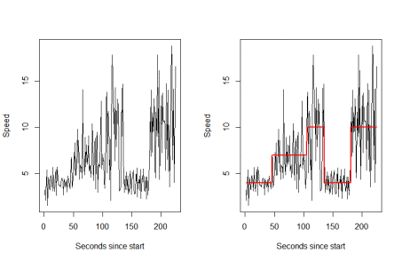
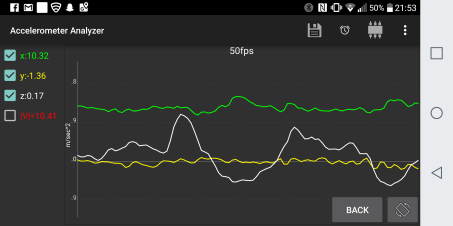

Last week I attended a talk given by Professor Idris Eckley named “Making Sense of Sensor Data”. One of the main areas I see sensors being used every day is my phone telling me how much I’ve walked. There is quite a few problems in sensor data. I’ll look at two of them here namely the changepoints in the data and the frequency at which we observe data
Changepoints
The first is quite simple, suppose we observe a long uni-variate time series of some movement measure in a sensor. For the purpose of this blog I’ll simply generate some fake data:
 The picture on the left doesn’t have the mean of the generating process drawn in, the right does.
I generated the data by taking three different possible states: walking (mean speed 4, variance of speed 1), jogging (mean 7, variance 2) or running (mean 10, variance 4). For each of these states I sampled a point from a normal distribution for each second and changed paces as time goes on. What changepoint analysis aims to do is look at the time series as a whole and answer two questions
How many changepoints is there? Where’s the most likely place for them to be? I tested two methods binary segmentation (Fast but approximate) and segment neighbourhood (slow but exact). For both methods I told them to look for changes in both mean and variance and a maximum of 8 changepoints.
The results show binary segmentation falsely detected a changepoint at t=3 but did the rest almost exactly (total of 5 seconds in error). However, segment neighbourhood detected the exact results.
With a dataset of this size the difference in speed hardly matters however when we get to larger datasets speed becomes a very important issue. This is where PELT (1) comes in which is shown to be almost as fast as binary segmentation but nearly always gives a more accurate solution.
Rate of Data
Take your phone for an example, if you have a fairly new phone is probably has some feature than tells you how much you walk, run and climb stairs each day. I had a look at an app on my phone that gives the raw data of the accelerometer sensor which observes how much your phone moves in 3d.
 Picture of my accelerometer time series data as I move the phone back and forth from my face. It accurately detects that it’s not moving much in the y direction (to the ceiling) or x direction (right/left).
The picture above was recording my movements 50 times per second. To go from this much data to say when my phone is in my pocket down to a diagnosis of what I’m doing at any given time is a very difficult problem. Sadly at the moment I havn’t looked into any solutions however time series clustering seems to be the right area to look at, I plan on looking at this in future.
Another slightly strange phenomena is that if you observed data at the wrong frequency then the results can be extremely misleading. One example is the wagon wheel effect:
The same thing can happen in certain situations in sensor phone sensor data for example you might want to check if someone is climbing stairs vs walking. If say we’re just looking at the vertical component of the accelerator, and we miss the actual vertical launch due to sampling frequency it will look like the person is standing still rather than climbing.